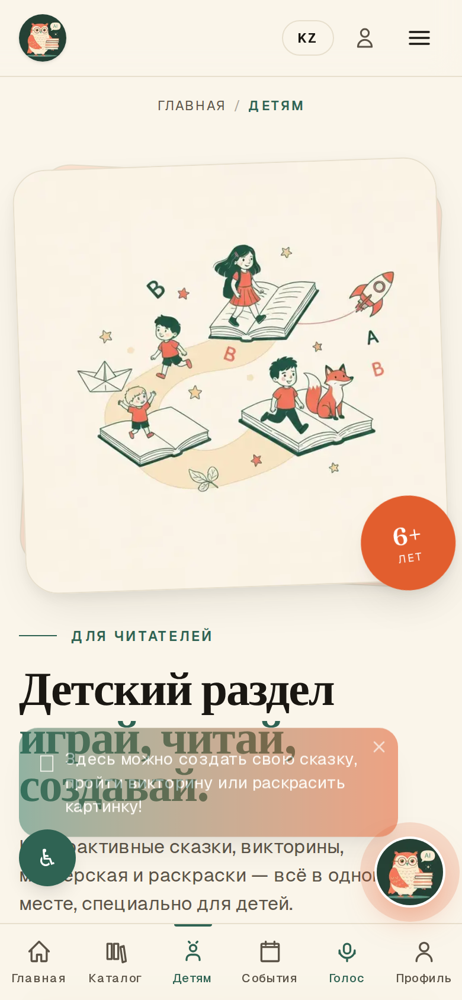
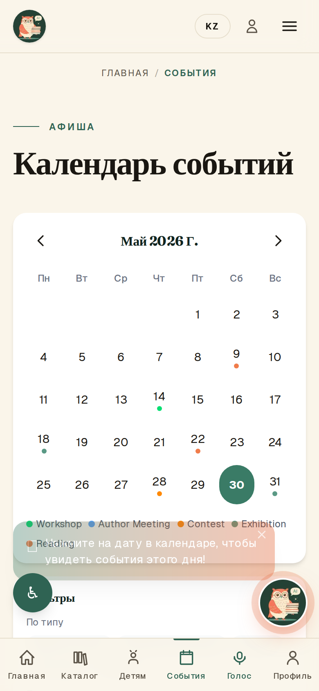

ФУНКЦИЯ 02
Каталог фонда
943 материала с обложками
- У каждой книги — обложка, даже у архивных сканов.
- Поиск по названию, автору и теме.
- Фильтры по разделу (краеведение и др.) и по возрасту.
- Богатый фонд краеведения об Улытау и Сәтбаев.


ФУНКЦИЯ 03
Чтение онлайн
Книга открывается прямо в браузере
- Регулировка размера шрифта и тем: светлая / сепия / тёмная.
- Закладки и прогресс — сайт помнит, где вы остановились.
- Озвучивание текста голосом.
- Карточка книги: описание, аннотация, «в избранное».

ФУНКЦИЯ 05
Голосовой помощник
Живой диалог голосом
- Ребёнок может говорить вслух — помощник отвечает голосом.
- Удобно для самых маленьких, кто ещё не печатает.
- Поддержка казахского и русского.
- Доступно с телефона и компьютера.

ФУНКЦИЯ 06 · деталь
Генератор сказок
Каждая сказка уникальна
- Имя, тема, персонаж, возраст — и сказка готова.
- Интерактивный сюжет: ребёнок выбирает развитие истории.
- Озвучивание разными голосами.
- Сказку можно сохранить и перечитать.
ФУНКЦИЯ 07
Афиша событий
Мероприятия библиотеки в удобном календаре
- Календарь с отметками дней, где есть события.
- Фильтры по типу (мастер-класс, встреча, конкурс, выставка) и возрасту.
- Карточка события: дата, время, место, описание.
- Прошедшие события помечаются автоматически.

ФУНКЦИЯ 09
Удобно с любого устройства
Большинство читателей заходят с телефона — сайт создан для этого



ФУНКЦИЯ 10
Панель управления
Библиотекарь управляет сайтом сам — без программиста
- Наглядная сводка: книги, посещения, активность ИИ.
- Все разделы сайта редактируются через простой интерфейс.
- Двуязычное наполнение (RU/KK) в одном месте.
- Разграничение прав: администратор и библиотекарь.

ФУНКЦИЯ 10 · интерфейс
Простой интерфейс управления